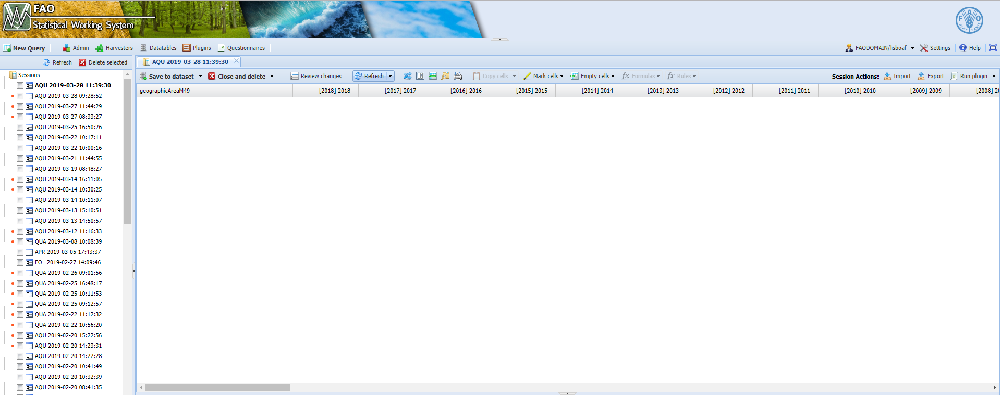

Chapter 1 The faoswsAquastatExternal module
1.1 Aims
The faoswsAquastatExternal is essentially a data harvester that emerges as demand for making the AQUASTAT process of extracting and reshaping data from external sources (web databases) easier. Thus, the faoswsAquastatExternal module:
1.1.1 Identifies AQUASTAT external data sources
The module needs to identify the external data used by AQUASTAT. This identification is made with the help of the SWS data table aquas_external_sources which has:
element_code. AQUASTAT element codes;
element_name. AQUASTAT element names;
source_name. External source name;
source_item_code. The item code of the AQUASTAT element in the external data source; If the item is not applicable, the cell is blank.
source_element_code. The element code of the AQUASTAT element in the external data source. If the element is not applicable, the cell is blank.
data_link. The electronic address containing a downloadable version of data (.xsl, .csv, .zip, .json files)
After identification, the module downloads the data to temporary files and read it in to start the processing.
1.1.2 Reshapes the data sources
Data from different sources are likely to occur in different formats. Therefore, after the download of the data, the module needs to apply a different reshaping strategy to each data source. Regardless the initial shape of the external AQUASTAT data sources, the module is going to convert each single source into an SWS long format dataset with geographicAreaM49, aquastatElement, timePointYears, flagOvservationStatus, flagMethod.
The flagOvservationStatus and flagMethod are “X” and “c” for all data extracted by the faoswsAquasatExternal module.
1.1.3 Maps out AQUASTAT to external sources
With the data already reshaped, it is effortless for the module to keep relevant AQUASTAT elements since the aqua_external_source data table provides the means for correctly mapping out the original external data code to AQUASTAT codes.
1.1.4 Maps out FAOSTAT areas to UNSDM49
The SWS data table m49_fs_iso_mapping has the correspondence among different international codes (FAOSTAT, UNSDM49, ISO2, ISO3) for geographic areas and is used to convert area codes in the external sources to UNSDM49 codes which is the standard in the SWS.
1.1.5 Saves the output back into SWS
Finally, the module merges the sources into a single dataset. This output is an SWS-compliant long-format dataset name aquastat_external that is saved by the user in the SWS and will be ready to serve as an input of the faoswsAquastatUpdate module.
1.2 Workflow
Figure 1.1: Workflow of the faoswsAquastatExternal module.
1.2.1 Only Possible Workflow
FAOSTAT, the ONLY REACHABLE DATA SOURCE:
The harvest of all external data was proved to be not possible due to IT security reasons. During the development, it was noticed that SWS modules running in SWS could not access external downloadable links. The only exceptions are the data from FAOSTAT.
Therefore, while the module does not have the clearance to download external data, the faoswsAquastatExternal data will only harvest FAOSTAT data.
Figure 1.2: Workflow of the faoswsAquastatExternal module HARVESTING FAOSTAT data only.
1.3 Running the module
Log in the SWS;
Click on New Query;
Select AQUASTAT domain and aquastat_external dataset;
- Select whatever geographicM49Area, aquastatElement, and timePointYears;

Figure 1.3: Steps 1 to 4
The faoswsAquastatExternal searches and downloads data from external sources.; therefore, what the user is selecting in the query is irrelevant for the module’s output.
- Run the query and get an empty session;
Figure 1.4: Empty SWS session of the aquastat_external dataset
Click on Run plugin on the top-right.
Select the faoswsAquastatExternal module and click on Run plugin;
Figure 1.5: Select the AquastatExternal plugin and run it
8. Wait for the results to appear in the session;

Figure 1.6: Select the AquastatExternal plugin output in the session
Click on Save to dataset;
Email to the user.

Figure 1.7: Select the AquastatExternal output is emailed to the user.
1.4 Did the module..
The module has met the expectations concerning data from FAOSTAT. However, due to security reasons, the downloadable links could not be accessed by the plugin. In any case, *ALL FAOSTAT VARIABLES WERE CORRECTLY HARVESTED AND MAPPED TO AQUASTAT**.